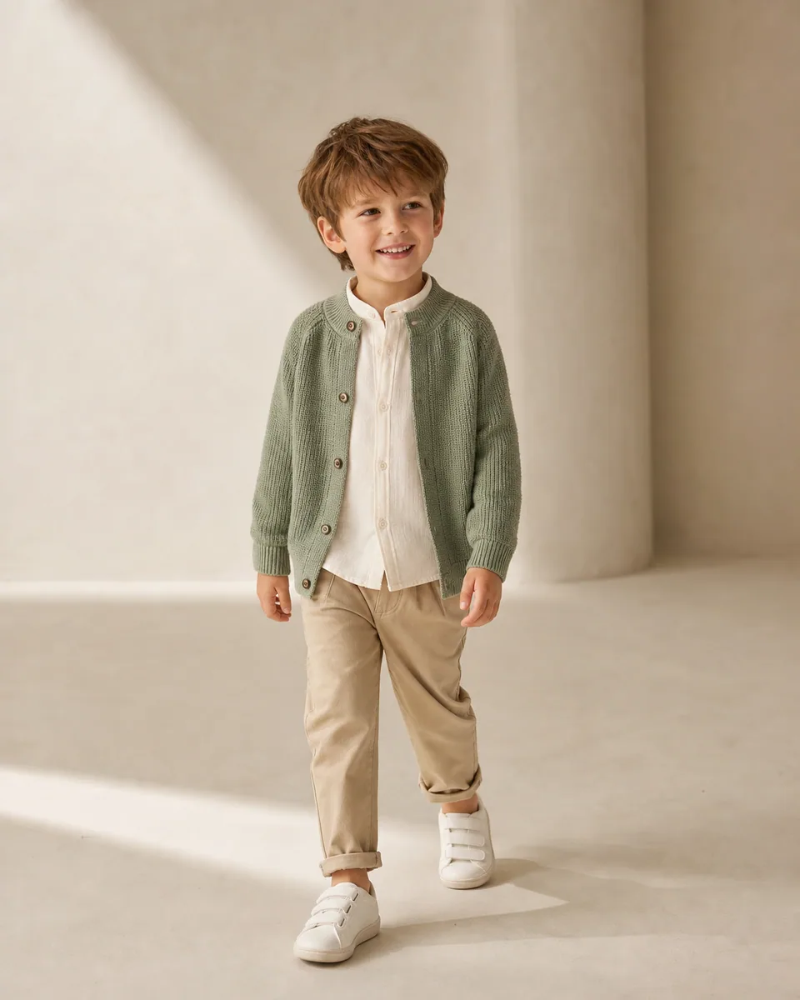

Error / 404Page not found
Oops, this little page wandered off.
The page you’re looking for may have moved, changed, or no longer be available.
Nothing to see here—but plenty to explore elsewhere.

Wardrobe note · 04The page you’re looking for may have moved, changed, or no longer be available.
Nothing to see here—but plenty to explore elsewhere.

Wardrobe note · 04